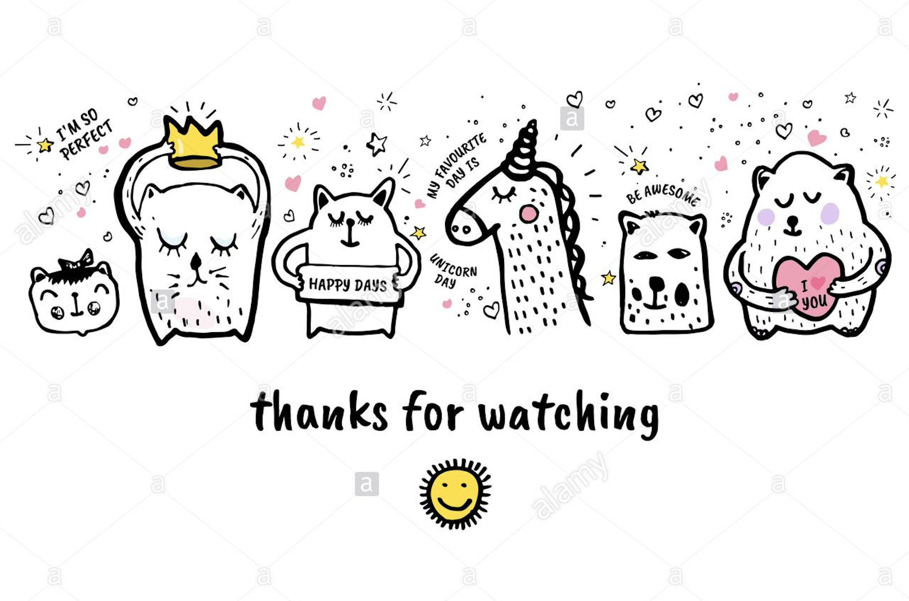

ABOUT ME
I am living in Ho Chi Minh city. My major is Digital Marketing, minor is Finance and this is the second year in RMIT University.
As I am an outgoing and active person, I really enjoy outdoor activities such as camping, jogging and also, sometimes I go snorkeling with my friends. Also, I occasionally spend time joining charity events in the East-West of Vietnam with my family. I have a great passion for travelling and reading books (including novels and comic books). I would like to spend most of my free time with close friends and families because I believe that taking your time with people you love gives you positive energy every single day
I become a student of RMIT Vietnam university since it has qualified, experienced academic lecturers, which provides to me a high-quality undergraduate program. Besides that, international learning environment and good facilities supporting for my study such as financial trading laboratory, extensive library, etc. are also the reasons why I choose RMIT. Last but not least, this university organizes frequently guest lectures, careers fairs, competitions, industry tours, and internships, which provides me more information about my future job and working experiences
.
Although I am a student from school of business and management, I have huge interest in IT, especially topics about Augmented Reality, Virtual Reality and Artificial Intelligence. I enrolled this course because in the modern day and age, information technology plays an important role in a number of different fields like education, healthcare, marketing, security… and having knowledge about IT is extremely necessary for my future. After this course, I expect to have the foundation knowledge about IT and understand its application in our life. I have not much knowledge about this area, but I will put my best effort since I need a good GPA score to apply for my higher-education in Singapore.
In the future, my ideal job is become marketing manager in Taiger company. Taiger specializes in Knowledge Work Automation solutions. Headquartered in Singapore, this company help to Improve Operational Efficiencies for Financial Institutions, Insurance Companies and Government Organizations globally. This working position has attractive salary along with many good remuneration and good working environment. Besides that, i want to learn and work in Singapore as it has top education standards, efficient medical system and low crime rate. In order to qualify for this position, I need to have minimum bachelor's degree in Marketing, more than 5 years hands on experience on planning and executing B2B digital performance campaigns and expert practitioner in web and ad analytics platforms. To reach my goal, besides having expert skill in marketing, it requires knowledge about IT and it is also the reason why I took this course. This position also requires working experiences; thus, I will work for several marketing agencies before applying for this job.
Im really good at:
Photography
Web Design
Photoshop
MY TEST RESULT
Here are the result of my Myers-Bring, Learning Style and Emotional Intelligence tests .
Click on the images to make them bigger
MY PROJECT IDEA
Including my Motivation; Description; Tools, Techniques , Skills required ; Outcomes.
Click on the images to make them bigger
THANK YOU FOR VIEWING
I'd love your feedback!

Ho Chi Minh, VN
ID: S3753366
Email: S3753366@gmail.com
Swing by for a cup of , or leave me a note:

![Currently, there are more than 12750 clinics in Vietnam and the overload of is still very popular, especially in big cities like Hanoi, Ho Chi Minh City, Da Nang ... Waiting and queuing for an hour is a constant obsession for people coming to the clinic. Illness plus long waiting time makes many people feel extremely tired. From that situation, I want to build and developed an app for booking a schedule at the clinic. This app provides two-way interaction between the clinic and the patient, in order to address the current crowds in the number order areas and waiting areas in clinic.](binh.jpg)
![This apps helps patients to schedule an appointment in advance to avoid waiting time. In the details, this app provides information about all clinics in Vietnam, including address, doctors, price for an hour of medical examination, available time for booking… By providing that information, customers can easily find the nearest clinics and with suitable price for them. After that, customer will create an account by using email or their phone number. Next, customer will book the medial schedule in advance, which help them to reduce waiting time in the clinic. After booking, we will be sent customer the confirmation letter about the time, detailed information about doctor and a series number of the booking. Customers are allowed to pay by cash when finishing their treatment at the clinic or pay by Visa, credit card, e-wallet. We also collect the feedback of customer in order to improve our services. This is the medical examination process:
1. Create an account
2. Book appointment through the app
3. Customer: show the booking number for receptionist of the clinic
4. Customer: examination with a scheduled doctor
5. App: record the feedback of patients
Beside that service, we also provide the medical booking with family doctor for those who want to save their time or elderly people. However, the fee for this service is more expensive. About the business model, we will have the revenue by commission through each medical booking (10% each booking) and through advertising.](hanh.jpg)
![Most app requires data base. For our medical booking apps, we need to collect the database about all the clinics in Vietnam and suggested doctors.
For the mobile app development, it is recommended that we should use Swift/Objective-C for iOS development and Java for Android development.
Several open source mobile app development tools that i might consider such as BuildFire.js, Framework 7, Ionic Framework, jQuery,…
Referred to as UI/UX, these skills are incredibly important for the end-user’s satisfaction since it is everything your audience sees and engages with on a digital platform. A digital experience is absolutely nothing without design, and a bad design can ruin everything.](khe.jpg)